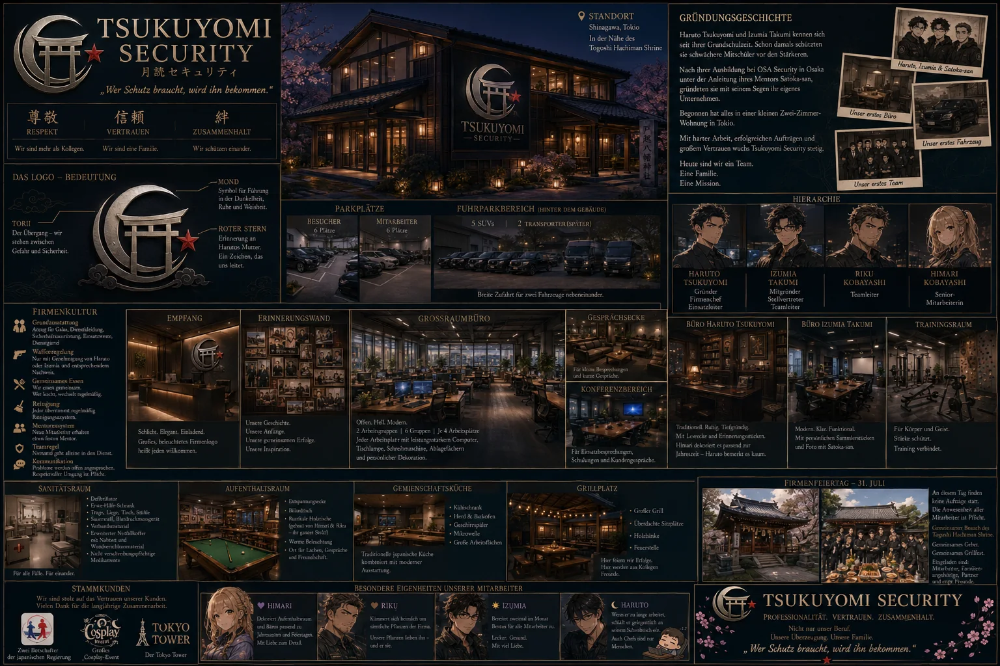

Philosophie
Der Mensch im Mittelpunkt
Jeder Mitarbeiter soll sich als Teil einer Gemeinschaft fühlen. Gemeinsame Mahlzeiten, ein Mentorensystem und offene Kommunikation gehören ebenso zur Firma wie Einsatzplanung und Ausbildung.

Schutz · Verantwortung · Vertrauen
月読セキュリティ
„Eine Familie, die Menschen schützt.“Ideenentwurf · visuelle Referenz
Der Ort
Tsukuyomi-Security wurde von Haruto und Izumia gegründet. Aus einem kleinen gemeinsamen Anfang entstand ein Unternehmen, das Professionalität und menschlichen Zusammenhalt nicht als Gegensätze betrachtet.
Atmosphäre
Hinter der traditionellen Fassade arbeitet modernste Technik. Trotzdem fühlt sich das Gebäude weniger wie eine gewöhnliche Firma und mehr wie ein zweites Zuhause an.
Philosophie
Jeder Mitarbeiter soll sich als Teil einer Gemeinschaft fühlen. Gemeinsame Mahlzeiten, ein Mentorensystem und offene Kommunikation gehören ebenso zur Firma wie Einsatzplanung und Ausbildung.
Gebäude
Dunkles Holz und warme Elemente prägen die Fassade. Im Inneren stehen offene Arbeitsbereiche, Trainingsräume, ein Sanitätsraum und ein großer Aufenthaltsbereich für das Team bereit.
Gemeinschaft
Die Erinnerungswand, selbst gebaute Tische und der jährliche Firmenfeiertag zeigen, dass Tsukuyomi-Security seine Geschichte und die Menschen dahinter bewusst bewahrt.